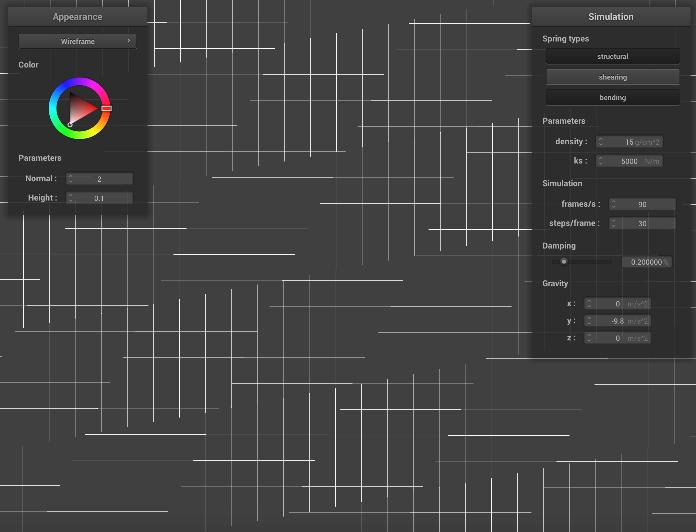
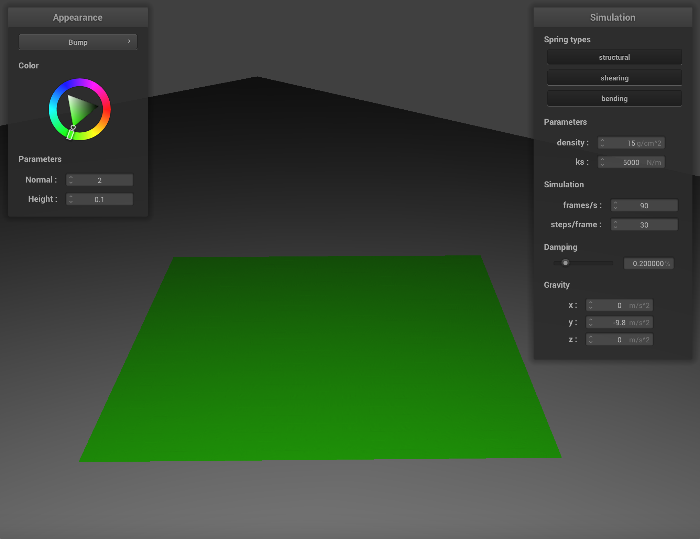
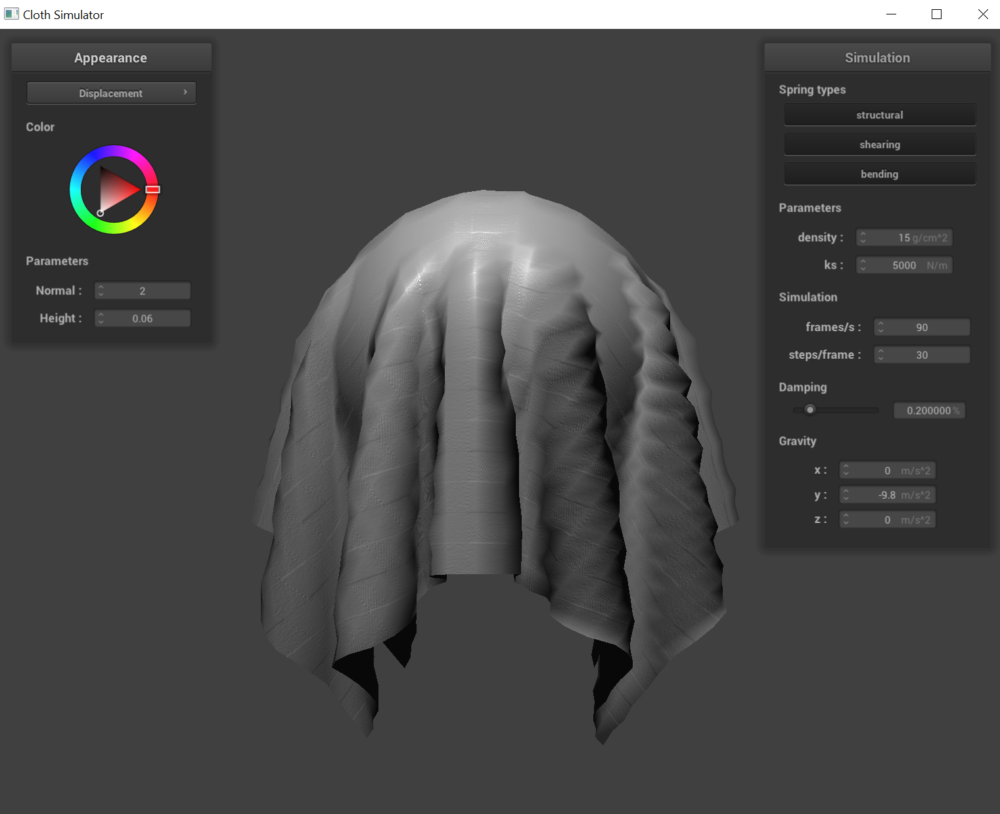

Overview
In this assignment, we implemented physical simulation for a cloth, namely construction of the cloth itself, simulation of various forces acting on the cloth itself, collisions, and shader simulations.
Part 1: Masses and Springs (20 Points)
Take some screenshots of scene/pinned2.json from a viewing angle where you can clearly see the cloth wireframe to show the structure of your point masses and springs.
|
Overview of pinned2
|
Zoomed in image of pinned2
|
|
Alternative angle of pinned2
|
Alternative angle of pinned2
|
Show us what the wireframe looks like (1) without any shearing constraints, (2) with only shearing constraints, and (3) with all constraints.
|
Without shearing constraints
|

Without shearing constraints
|
|
With only shearing constraints
|
With only shearing constraints
|
|
With all constraints
|
With all constraints
|
Part 2: Simulation via numerical integration (20 Points)
Experiment with some the parameters in the simulation. To do so, pause the simulation at the start with P, modify the values of interest, and then resume by pressing P again. You can also restart the simulation at any time from the cloth's starting position by pressing R.
-
Changing spring constant ks: When ks is low, the cloth sags to a much lower final position, and the different point masses in the cloth are more loose against each other. Conversely, when ks is high, the point masses in the cloth are much more tight, and the final position of the cloth is much higher.
|
ks = 50 N/m
|
ks = 50000 N/m
|
-
Changing density: When density is low, the gravitational force acting on each individual point mass is much lower, hence the cloth sags to a higher final position. Conversely, when density is higher, the cloth sags to a lower final position.
|
Density = 1 g/cm2
|
Density = 30 g/cm2
|
-
Changing damping: When damping increases, the cloth reaches its final position much quicker, and there's a lower tendency for the individual point masses to bounce around. Conversely, when damping decreases, there's a higher tendency for the individual point masses to bounce around, and hence they reach equilibrium (final position) slower. Changing damping does not, however, affect its final / equilibrium position.
|
Damping = 20%
|
Damping = 80%
|
Show us a screenshot of your shaded cloth from scene/pinned4.json in its final resting state! If you choose to use different parameters than the default ones, please list them.
pinned4.json cloth in its final resting state
Part 3: Handing collisions with other objects (20 Points)
Show us screenshots of your shaded cloth from scene/sphere.json in its final resting state on the sphere using the default ks = 5000 as well as with ks = 500 and ks = 50000. Describe the differences in the results.
As the spring constant (ks) decreases, the cloth rests more loosely on the sphere. In other words, a greater portion of the cloth falls underneath the sphere. As the spring constant decreases, the cloth is less rigid, and hence the individual point masses on the cloth is more loosely coupled together, resulting in a more loose cloth.
|
ks = 500
|
ks = 5000
|
|
ks = 50000
|
Show us a screenshot of your shaded cloth lying peacefully at rest on the plane. If you haven't by now, feel free to express your colorful creativity with the cloth! (You will need to complete the shaders portion first to show custom colors.)

Shaded cloth in its final resting state on the plane
Part 4: Handling self-collisions (20 Points)
Show us at least 3 screenshots that document how your cloth falls and folds on itself, starting with an early, initial self-collision and ending with the cloth at a more restful state (even if it is still slightly bouncy on the ground).
|
Early self-collision
|
Mid self-collision
|
|
Cloth at restful state
|
Vary the density as well as ks and describe with words and screenshots how they affect the behavior of the cloth as it falls on itself.
|
High density
|
 High ks
High ks
|
Increasing the density of the cloth makes it heavier. As a result, the cloth will fall faster due to greater gravitational force acting on it.
When a denser cloth falls on itself, it tends to create more pronounced folds and creases, and it settles quicker due to its weight.
The interactions between different parts of the cloth, such as friction and collision, are more pronounced, leading to a more compact and less floaty settling.
Increasing ks makes the cloth stiffer. Stiffer cloths resist bending and folding, leading to less pronounced creases when the cloth
falls on itself. The cloth tends to maintain its shape more, leading to less realistic but more controlled simulations. When a stiffer cloth interacts with itself,
the folds and bends are more shallow, and the cloth is less likely to drape smoothly over surfaces or itself.
Part 5: Cloth Sim (20 Points)
Explain in your own words what is a shader program and how vertex and fragment shaders work together to create lighting and material effects.
The vertex shader processes each vertex of a model, determining its position and basic properties, like how it's illuminated.
After that, the fragment shader takes over, calculating the color and texture of each pixel on the model based on the information
provided by the vertex shader and additional data like lighting and material properties. Together, these shaders work to create the
final visual output, allowing for detailed lighting and material effects on 3D objects.
Explain the Blinn-Phong shading model in your own words. Show a screenshot of your Blinn-Phong shader outputting only the ambient component, a screen shot only outputting the diffuse component, a screen shot only outputting the specular component, and one using the entire Blinn-Phong model.
The Blinn-Phong shading model is a simplified approach to simulating how light interacts with surfaces in 3D graphics, enhancing realism.
It combines ambient, diffuse and specular lighting to create a realistic image.
-
Ambient Lighting: This is a constant lighting applied to all parts of the object equally, regardless of its orientation or position relative to light sources. It's a way to ensure that no part of the object is completely dark, simulating the effect of indirect light that bounces around the environment.
-
Diffuse Lighting: This represents the light that comes from a source and hits the object, spreading uniformly across its surface. Diffuse lighting intensity depends on the angle between the light source and the surface normal (a perpendicular vector to the surface). The more directly the light hits the surface, the brighter it appears.
-
Specular Lighting: This is the shiny highlight you see when the light reflects off a surface directly towards the viewer. In the Blinn-Phong model, this is calculated using the halfway vector between the viewer's direction and the light source direction, making it computationally simpler than the Phong model. The size and intensity of the specular highlight are controlled by the material's shininess coefficient; a higher value results in a smaller, sharper highlight, while a lower value produces a broader, dimmer one.
|
Ambient Lighting
|
Diffuse Lighting
|
|
Specular Lighting
|
Complete Model
|
Show a screenshot of your texture mapping shader using your own custom texture by modifying the textures in /textures/.
Show a screenshot of bump mapping on the cloth and on the sphere. Show a screenshot of displacement mapping on the sphere. Use the same texture for both renders. You can either provide your own texture or use one of the ones in the textures directory, BUT choose one that's not the default texture_2.png. Compare the two approaches and resulting renders in your own words. Compare how your the two shaders react to the sphere by changing the sphere mesh's coarseness by using -o 16 -a 16 and then -o 128 -a 128.
|
Bump Map
|
Displacement Map
|
|
Low Resolution Bump Map
|
Low Resolution Displacement Map
|
|
High Resolution Bump Map
|

High Resolution Displacement Map
|
Bump mapping alters the normal vectors during shading to simulate depth without changing the model's geometry, offering good
performance with negligible impact from the model's resolution. Displacement mapping, on the other hand, physically modifies the
geometry by displacing vertices along their normals according to a height map, leading to actual changes in the model's
silhouette and more realistic results. However, this method is computationally more demanding and its effectiveness greatly relies
on the model's resolution; finer meshes can depict detailed displacements, while coarser meshes may result in less detailed and
blockier surfaces, as seen through the images above.
Show a screenshot of your mirror shader on the cloth and on the sphere.
|
Mirror shader on cloth
|
Mirror shader on sphere
|